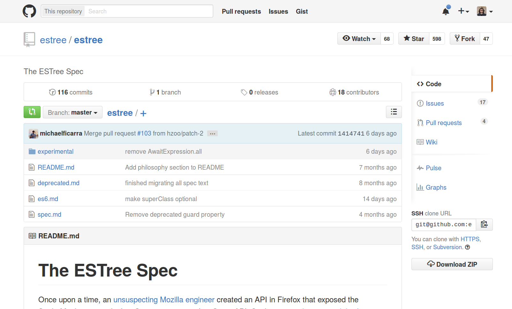
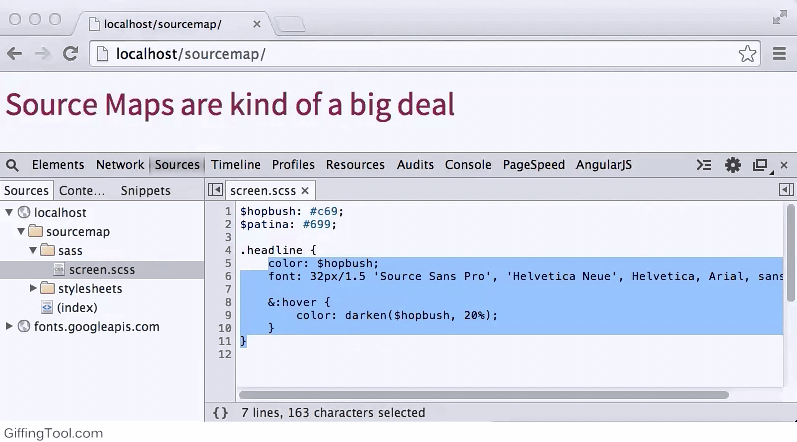

JavaScript Language Tooling
Benjamin Woodruff
http://benjam.infoMy Background
- Internship at Facebook
- Worked on "JS Infrastructure"
- Moved Facebook.com to ESLint

Why JavaScript?
- Lingua Franca of the Web
- Modern JS is great language!
- Reasonably fast
- Multiple independent implementations
- Tons of existing tooling to build on top of
- Hacker News likes it
In This Talk...
- Language theory
- Let's fix JS
- Tools you can use today
Programming Languages 101
Code → Tokens → AST → Constraints → Transformer → Interpreter
(Some of these are optional)
Code → AST → Transformer →
Lexing and Parsing
Goal: Convert text to an easily traversed representation.Lexing produces tokens
/\s+/ => whitespace
/"[^"]*"/ => string
/#.+$/ => comment
/[_a-z][_a-z0-9]*/i => identifier
/[0-9]+/ => integer
_"foo" 42bar#buzz
indentifier string whitespace integer identifier comment
indentifier string integer identifier
Abstract Syntax Tree
Goal: Convert the tokens to a tree
function parse(tokens) {
const body = [];
while (tokens.hasNext()) {
body.push(parseStatement(tokens));
}
return {type: 'Program', body};
}
function parseStatement(tokens) {
if (tokens.next().type === 'FunctionKeyword') {
return parseFunction();
} else if (tokens.next().type === 'Identifier') {
return parseCallExpression();
} else {
throw new SyntaxError();
}
}
function parseFunction(tokens) {
const args = [];
const body = [];
tokens.consume('FunctionKeyword');
tokens.consume('(');
while (tokens.next() !== ')') {
args.push(parseExpression());
}
tokens.consume(')');
tokens.consume('{');
while (tokens.next() !== '}') {
body.push(parseExpression());
}
tokens.consume('}');
return {type: 'FunctionDeclaration', args, body};
}
// ...
Recursive tree traversal!
Problem
- That's a lot of code to write
- Programmers are lazy
Solution
- We're compiler writers
- Let's make a shorthand language (DSL)
- And a parser-generator
PEG.js
program
= _ body:(s:statement _ {return s;})+ {
return {type: 'Program', body: body};
}
_ 'whitespace'
= [ \t\r\n]*
statement
= function
/ callExpression
function
= 'function' _ '('
_ args:(expr:expression _ {return expr;})*
_ ')' _ '{'
_ body:(s:statement _ {return s;})*
_ '}' {
return {
type: 'FunctionDeclaration',
args: args,
body: body
};
}
expression
= 'expr'
callExpression
= 'fname' _ '('
_ args:(expr:expression _ {return expr;})*
_ ')' {
return {
type: 'CallExpression',
args: args
};
}
Problem
Some constructs aren't "context free", and can't be parsed this way.
def foo():
bar()
Example: Identation-based languages don't have clear start/end tokens. How do you tell when to stop parsing a construct?
Cheating
Extend the lexer, and insert indent/dedent tokens!
def foo():
bar()
1,0-1,3: NAME u'def'
1,4-1,7: NAME u'foo'
1,7-1,8: OP u'('
1,8-1,9: OP u')'
1,9-1,10: OP u':'
1,10-1,11: NEWLINE u'\n'
2,0-2,4: INDENT u' '
2,4-2,7: NAME u'bar'
2,7-2,8: OP u'('
2,8-2,9: OP u')'
3,0-3,0: DEDENT ''
3,0-3,0: ENDMARKER ''
Try this at home using import tokenize!
Programming Languages 101
Code → Tokens → AST → Constraints → Transformer → Interpreter
Constrainer
- Type checking
- Errors on undefined variables
- Verify argument counts
- Stylistic contraints
JavaScript doesn't do any of this. But a linter does!
JS: What's broken?
- Dynamic typing
- Weak typing
==vs===- Two null-ish types (
undefinedandnull) - Callback hell
- No block-level scoping
- Implicit globals
- Wasted bytes in whitespace
- No modules
- No classes
- No private properties
- Objects must have string keys
for..inwithblocks- ASI (Automatic Semicolon Insertion)
- Function Expression and Statement forms
newkeyword- Implicit and explicit
eval switch-case-breakfallthrough- Octal literals
Fixing it
- Add our own contrainer
- Use ES2015 and ES2016
- "Minify" our JavaScript
- Don't write JavaScript in JavaScript
Round One
Minifiers and LintersLow-hanging fruit: Minification
- Remove comments and whitespace
- Tokenize and strip
- Pro: Easy to implement
- Pro: Very fast
- Pro: Easy to perform on a stream
- Con: Missed opportunities
Modern Minification
- Build an AST
- Peephole optimization (syntactic find-replace)
- "Mangle" local variable names
- Remove obviously dead code
Advanced Minification
Static analysis of dynamic languages is hard.
var obj = {foo: 1, bar: 2};
console.log(obj[prompt('What property should I access?')]);
Akin to the halting problem
- Make basic well-defined assumptions about the code
- Add annotations to provide hints about usage
- Moderate improvement, lots of extra work
- Usually avoided
Build your own AST
- Google Closure Compiler (GCC)
- Uglify (including v2)
- YUI Compressor
- JSMin

SpiderMonkey/ESTree
Let's steal Mozilla's format Popular Parsers
- Esprima (ESTree)
- Acorn (ESTree)
- Babylon (Acorn fork + ES2015/2016)
- Espree (Esprima fork + ES2015)
- Shift (New AST format)
http://astexplorer.net/
Linting

Linting
- Pattern-match parts of the AST
- Generate warnings based on matches
Linting
module.exports = function(context) {
return {
"MemberExpression": function(node) {
if (node.object.name === "console") {
context.report(node, "Unexpected console statement.");
}
}
};
};
Popular Linters
- JSLint
- JSHint
- JSCS
- ESLint
- Babel (maybe)
Static typing
- TypeScript (Language superset)
- Flow (Language extension)
- Closure Compiler (Magic comments)
Flow: Type Inference
/* @flow */
function foo(x) {
return x * 10;
}
foo('Hello, world!');
hello.js:5:5,19: string
This type is incompatible with
hello.js:3:10,15: number
Flow: Type Annotations
/* @flow */
function foo(x: string, y: number): string {
return x.length * y;
}
foo('Hello', 42);
hello.js:3:10,21: number
This type is incompatible with
hello.js:2:37,42: string
Programming Languages 101
Code → Tokens → AST → Constraints → Transformer → Interpreter
CoffeeScript
- Uses jison parser-generator (Bison in JavaScript)
- Changes syntax (ruby-like), but (usually) not semantics
- Fresh start: can fix many JS issues
- Influential in the ES2015 standard
Compile-to-JS Problems
- Debugging
- Debugging
- Debugging
Source Maps
ES2015
function update(callback) {
$.ajax({
url : 'example.com',
type: 'GET',
success: function(data) {
console.log(data.something);
callback(data);
}
})
}
function update() {
return $.ajax('example.com').then((data) => {
console.log(data.something);
return data;
}
}
ES2016
function update() {
return $.ajax('example.com').then((data) => {
console.log(data.something);
return data;
}
}
async function update() {
const data = await $.ajax('example.com');
console.log(data.something);
return data;
}
Problem?
JS-to-JS Compilation
- Flow and Typescript
- Traceur
- Babel
Babel
- Array comprehensions
- Arrow functions
- Async functions
- Async generator functions
- Classes
- Class properties
- Computed property names
- Constants
- Decorators
- Default parameters
- Destructuring
- Exponentiation operator
- For-of
- Function bind
- Generators
- Generator comprehensions
- Let scoping
- Modules
- Module export extensions
- Object rest/spread
- Property method assignment
- Property name shorthand
- Rest parameters
- React
- Spread
- Template literals
- Type annotations
- Unicode regex
Miss pointers?
Emscripten
Emscripten
ASM.js
function GeometricMean(stdlib, foreign, buffer) {
"use asm";
var exp = stdlib.Math.exp;
var log = stdlib.Math.log;
var values = new stdlib.Float64Array(buffer);
function logSum(start, end) {
start = start|0;
end = end|0;
var sum = 0.0, p = 0, q = 0;
// asm.js forces byte addressing of the heap by requiring shifting by 3
for (p = start << 3, q = end << 3; (p|0) < (q|0); p = (p + 8)|0) {
sum = sum + +log(values[p>>3]);
}
return +sum;
}
function geometricMean(start, end) {
start = start|0;
end = end|0;
return +exp(+logSum(start, end) / +((end - start)|0));
}
return { geometricMean: geometricMean };
}
ASM.js
- Strict subset of ES3
- Works in every browser
- Fully sandboxed
- Firefox AOT compiles to native code
"usually within a factor of 2 slowdown over native compilation
with clang"
JS Compilation Output
AST → Transform → ??? → JavaScript- String Concatenation
- AST Reprinter
Recast
var output = recast.print(ast).code;
See Also: Effective JavaScript Codemods by @cpojer
Takeaway
- Modern JS is pretty cool
- JavaScript's faults are fixable
- JS is an awesome compilation target